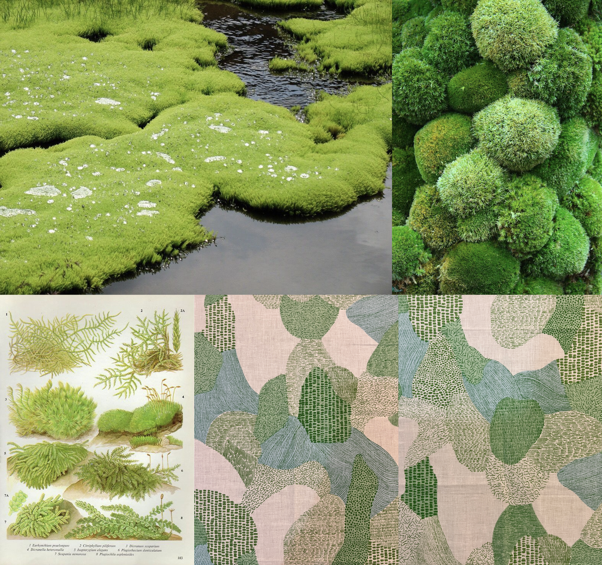
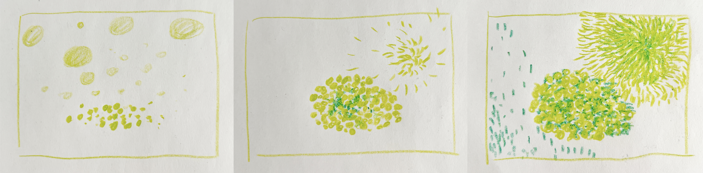
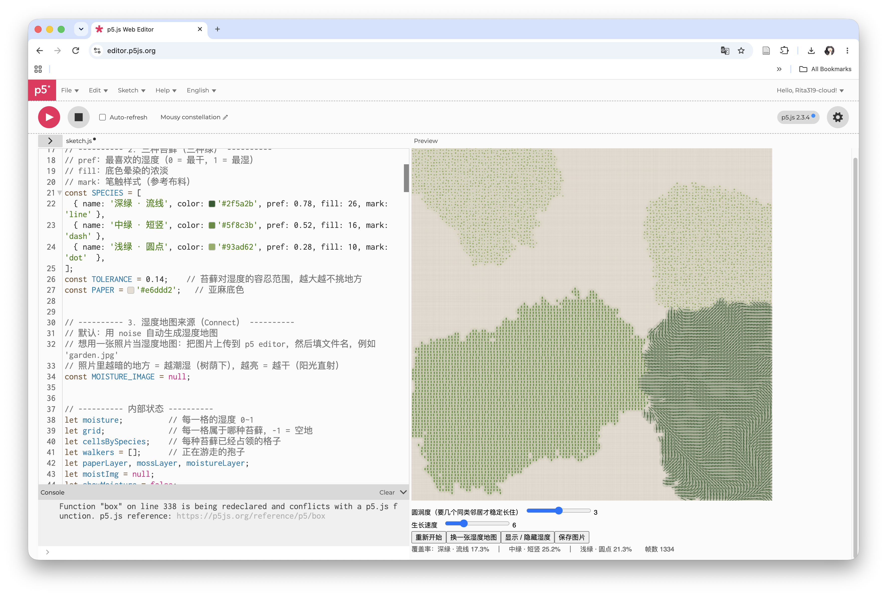
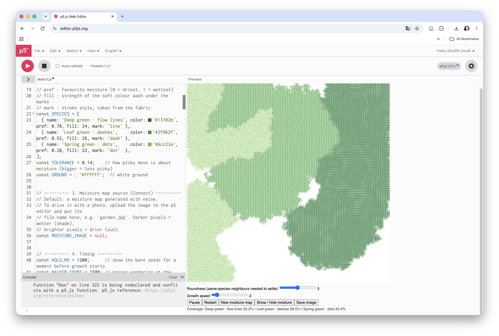
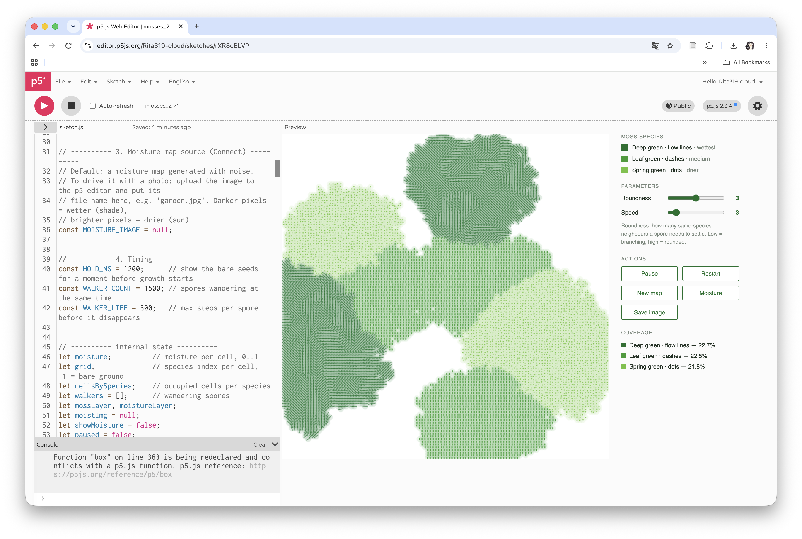
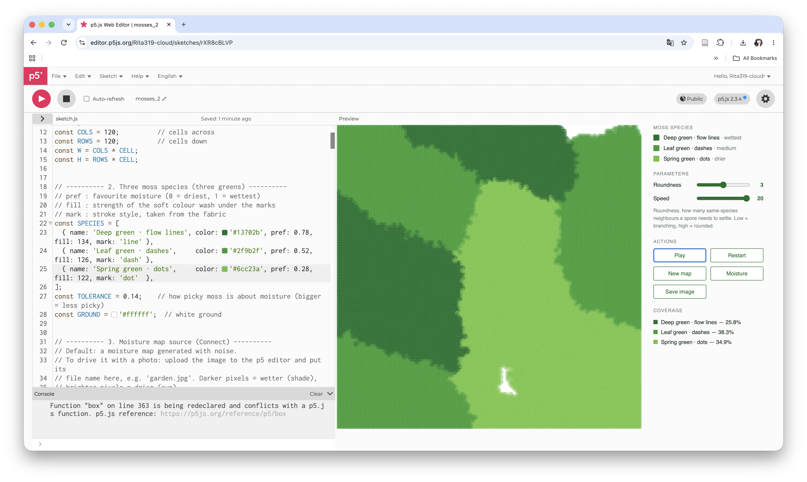
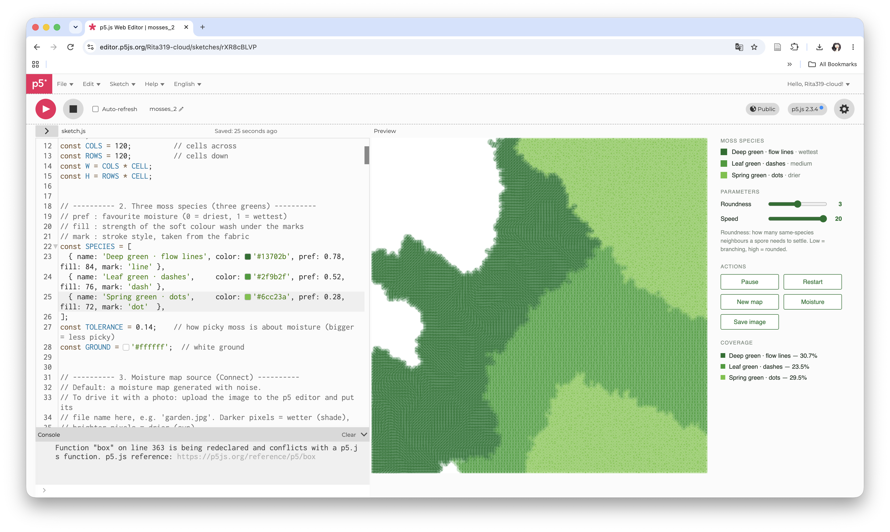

1 Observe
_Photographs of moss
_Textile featuring moss, from gift shop in Saiho-ji (Moss Temple)

Rules derived from moss growth:
_Spores are carried by the wind and land on the ground.
_Growth occurs only in damp, shaded areas.
_Patches expand gradually outward from their edges.
_When different species encounter one another, they stop spreading, resulting in distinct, territorial patches.
Concept:
Use p5.js to simulate the growth of moss on the ground, with a visual style inspired by the moss-covered landscapes of Saihō-ji (Kokedera) Temple.
02 Sketch
Visualizing the growth process of moss.

03 Connect
System Components:
Agents: Spores. They drift randomly across the screen; when they encounter existing moss and the location is sufficiently humid, they settle and take root.
Field: A humidity map. This determines where moss can grow and which specific type will flourish in a given area.
Multiple Moss Species: Each species has different humidity preferences; they expand independently and compete with one another for territory.
Iteration process:

The first version relied too heavily on the fabric pattern from in Saiho-ji temples. The color looks muddy.

Change the background color to white and increase the saturation of the three shades of moss green. It looks much cleaner now.

Move the control panel and UI elements to the side of the canvas rather than below it. Refine the design details of the sliders and buttons. Add color-coded labels for the different types of moss.

Adjust the 'fill' value to further increase the differentiation from the reference. Looks like changed too much.

Adjusted the 'fill' value slightly—this is the effect I was looking for.
The video documents a simulation of moss growth under the influence of two different humidity maps.